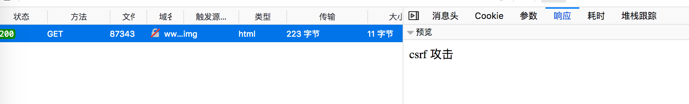

在 Web 安全领域中，XSS 和 CSRF 是最常见的攻击方式。本文将会简单介绍 CSRF 的攻防问题。
什么是CSRF
CSRF（Cross-site request forgery）跨站请求伪造：是一种劫持受信任用户向服务器发送非预期请求的攻击方式。
CSRF 攻击是攻击者借助受害者的 Cookie 骗取服务器的信任，可以在受害者毫不知情的情况下以受害者名义伪造请求发送给受攻击服务器，从而在并未授权的情况下执行在权限保护之下的操作。
一个典型的CSRF攻击有着如下的流程：
- 受害者登录
a.com，并保留了登录凭证（Cookie）。 - 攻击者引诱受害者访问了
b.com。 -
b.com向a.com发送了一个请求：a.com/act=xx。浏览器会默认携带a.com的Cookie。 -
a.com接收到请求后，对请求进行验证，并确认是受害者的凭证，误以为是受害者自己发送的请求。 -
a.com以受害者的名义执行了act=xx。 - 攻击完成，攻击者在受害者不知情的情况下，冒充受害者，让
a.com执行了自己定义的操作。
几种常见的攻击类型
GET类型的CSRF
GET类型的CSRF利用非常简单，只需要一个HTTP请求，一般会这样利用：

在受害者访问含有这个img的页面后，浏览器会自动向http://bank.example/withdraw?account=xiaoming&amount=10000&for=hacker发出一次HTTP请求。bank.example就会收到包含受害者登录信息的一次跨域请求。
POST类型的CSRF
这种类型的CSRF利用起来通常使用的是一个自动提交的表单，如：
<form action="http://bank.example/withdraw" method=POST>
<input type="hidden" name="account" value="xiaoming" />
<input type="hidden" name="amount" value="10000" />
<input type="hidden" name="for" value="hacker" />
</form>
<script> document.forms[0].submit(); </script>
访问该页面后，表单会自动提交，相当于模拟用户完成了一次POST操作。
POST类型的攻击通常比GET要求更加严格一点，但仍并不复杂。任何个人网站、博客，被黑客上传页面的网站都有可能是发起攻击的来源，后端接口不能将安全寄托在仅允许POST上面。
链接类型的CSRF
链接类型的CSRF并不常见，比起其他两种用户打开页面就中招的情况，这种需要用户点击链接才会触发。这种类型通常是在论坛中发布的图片中嵌入恶意链接，或者以广告的形式诱导用户中招，攻击者通常会以比较夸张的词语诱骗用户点击，例如：
<a href="http://test.com/csrf/withdraw.php?amount=1000&for=hacker" taget="_blank">
好消息！！
<a/>
由于之前用户登录了信任的网站A，并且保存登录状态，只要用户主动访问上面的这个PHP页面，则表示攻击成功。
CSRF的特点
- 攻击一般发起在第三方网站，而不是被攻击的网站。被攻击的网站无法防止攻击发生。
- 攻击利用受害者在被攻击网站的登录凭证，冒充受害者提交操作；而不是直接窃取数据。
- 整个过程攻击者并不能获取到受害者的登录凭证，仅仅是“冒用”。
- 跨站请求可以用各种方式：图片URL、超链接、CORS、Form提交等等。部分请求方式可以直接嵌入在第三方论坛、文章中，难以进行追踪。
- CSRF通常是跨域的，因为外域通常更容易被攻击者掌控。但是如果本域下有容易被利用的功能，比如可以发图和链接的论坛和评论区，攻击可以直接在本域下进行，而且这种攻击更加危险。
CSRF 攻击的防范
验证码
验证码被认为是对抗 CSRF 攻击最简洁而有效的防御方法。从上述示例中可以看出，CSRF 攻击往往是在用户不知情的情况下构造了网络请求。而验证码会强制用户必须与应用进行交互，才能完成最终请求。因为通常情况下，验证码能够很好地遏制 CSRF 攻击。
但验证码并不是万能的，因为出于用户考虑，不能给网站所有的操作都加上验证码。因此，验证码只能作为防御 CSRF 的一种辅助手段，而不能作为最主要的解决方案。
Referer Check
根据 HTTP 协议，在 HTTP 头中有一个字段叫 Referer，它记录了该 HTTP 请求的来源地址。
比如，如果用户要删除自己的帖子，那么先要登录 www.c.com，然后找到对应的页面，发起删除帖子的请求。此时，Referer 的值是 http://www.c.com；当请求是从 www.a.com 发起时，Referer 的值是http://www.a.com 了。因此，要防御 CSRF 攻击，只需要对于每一个删帖请求验证其 Referer 值，如果是以 www.c.com 开头的域名，则说明该请求是来自网站自己的请求，是合法的。如果 Referer 是其他网站的话，则有可能是 CSRF 攻击，可以拒绝该请求。
针对上文的例子，可以在服务端增加如下代码：
if (req.headers.referer !== 'http://www.c.com:8002/') {
res.write('csrf 攻击');
return;
}

Referer Check 不仅能防范 CSRF 攻击，另一个应用场景是 “防止图片盗链”。
添加 token 验证
攻击者可以完全伪造用户的请求(请求中所有的用户验证信息都存于 Cookie)，因此攻击者可以直接利用用户的 Cookie 来通过安全验证。抵御 CSRF，关键在于在请求中放入攻击者不能伪造的信息，并且该信息不存于 Cookie 中。
在 HTTP 请求中以参数的形式加入一个随机产生的 token，并在服务器端建立一个拦截器来验证这个 token，如果请求中没有 token 或者 token 内容不正确，则认为可能是 CSRF 攻击而拒绝该请求。
双重Cookie验证
利用CSRF攻击不能获取到用户Cookie的特点，我们可以要求Ajax和表单请求携带一个Cookie中的值。
双重Cookie采用以下流程：- 在用户访问网站页面时，向请求域名注入一个Cookie，内容为随机字符串（例如
csrfcookie=v8g9e4ksfhw）。 - 在前端向后端发起请求时，取出Cookie，并添加到URL的参数中（接上例POST
https://www.a.com/comment?csrfcookie=v8g9e4ksfhw）。 - 后端接口验证Cookie中的字段与URL参数中的字段是否一致，不一致则拒绝。
- 如果用户访问的网站为
www.a.com，而后端的api域名为api.a.com。那么在www.a.com下，前端拿不到api.a.com的Cookie，也就无法完成双重Cookie认证。 - 于是这个认证Cookie必须被种在
a.com下，这样每个子域都可以访问。 - 任何一个子域都可以修改
a.com下的Cookie。 - 某个子域名存在漏洞被XSS攻击（例如
upload.a.com）。虽然这个子域下并没有什么值得窃取的信息。但攻击者修改了a.com下的Cookie。 - 攻击者可以直接使用自己配置的Cookie，对XSS中招的用户再向
www.a.com下，发起CSRF攻击。
此方法并没有大规模应用，因为安全性没有Token高
用双重Cookie防御CSRF的优点- 无需使用Session，适用面更广，易于实施。
- Token储存于客户端中，不会给服务器带来压力。
- 相对于Token，实施成本更低，可以在前后端统一拦截校验，而不需要一个个接口和页面添加。
- Cookie中增加了额外的字段。
- 如果有其他漏洞（例如XSS），攻击者可以注入Cookie，那么该防御方式失效。
- 难以做到子域名的隔离。
- 为了确保Cookie传输安全，采用这种防御方式的最好确保用整站HTTPS的方式，如果还没切HTTPS的使用这种方式也会有风险。
总结
总结一下上文的防护策略：
- CSRF自动防御策略：同源检测（Origin 和 Referer 验证）。
- CSRF主动防御措施：Token验证 或者 双重Cookie验证 以及配合Samesite Cookie。
- 保证页面的幂等性，后端接口不要在GET页面中做用户操作。